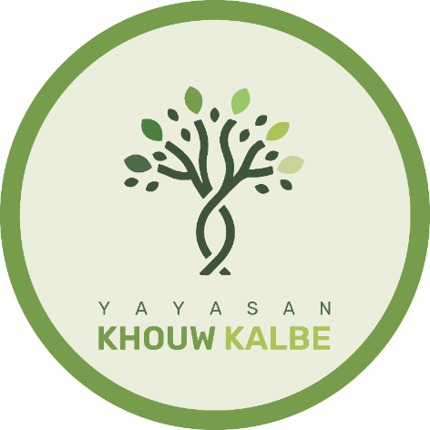
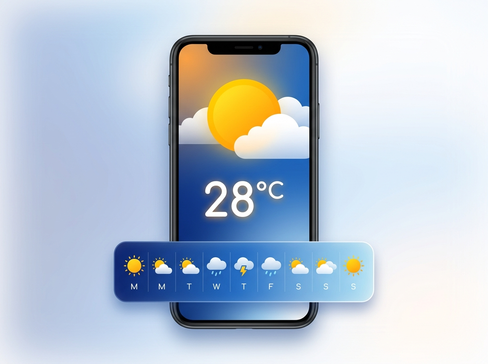
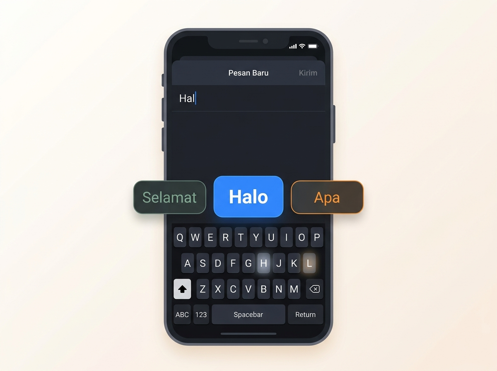
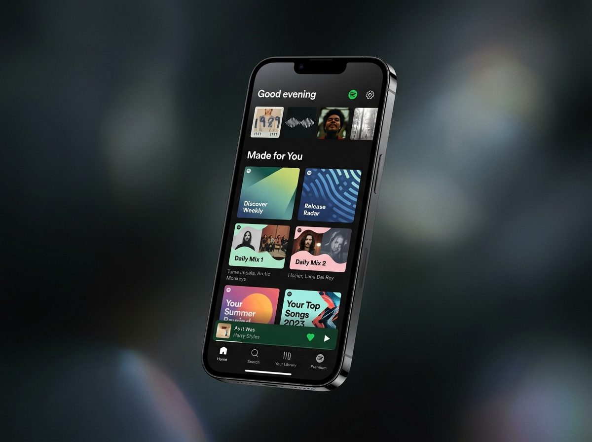
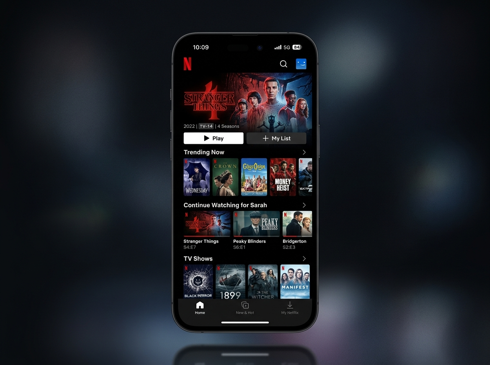
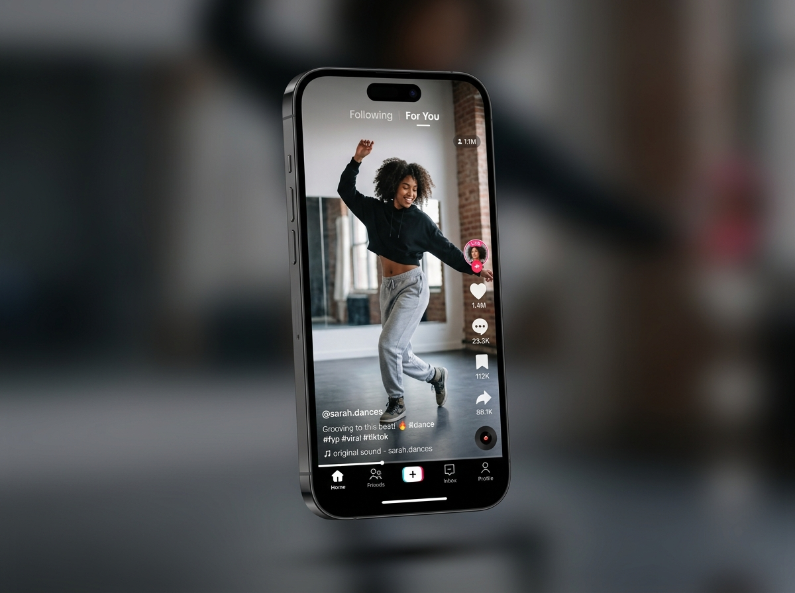

Mindful AI [Judul Utama Presentasi] [Sub-Judul Presentasi]
[Deskripsi singkat atau sub-topik materi]
Presented by Muhammad Haerul

Muhammad Haerul, S.Kom
AI Engineer · 4 Years of Experience
Daftar Isi
Table of Contents
AI Awareness & Understanding
AI Personalization for Student Productivity
AI Awareness & Understanding
Memahami apa itu AI, bagaimana cara kerjanya, serta menyadari batasan dan potensi kesalahannya.
AI Is Everywhere.
AI sudah ada jauh sebelum ChatGPT, Gemini, Copilot, dkk.
AI sudah ada jauh sebelum ChatGPT, Gemini, Copilot, dkk.
Bahkan, tanpa disadari, kita sudah berinteraksi dengan AI hampir setiap hari.
AI yang kita kenal...
AI yang mungkin tidak kita sadari...
dalam keseharian kita

Weather App

Keyboard
Face ID
AI yang mungkin tidak kita sadari...
ada yang sering kita pakai

Spotify

Netflix

TikTok
AI yang mungkin tidak kita sadari...
sampai yang paling complex
Siri
Tesla
Boston Dynamics
So, AI is not new.
AI bekerja
di balik layar
Dulu, AI banyak bekerja di balik layar tanpa kita sadari.
Kita bisa
berinteraksi
langsung dengan AI
Sekarang, kita bisa berinteraksi langsung dengan AI melalui ChatGPT, Gemini, Copilot, dkk.
Sekarang kita tahu kalau AI banyak variasinya di sekitar kita.
Sekarang kita tahu kalau AI banyak variasinya di sekitar kita.
Tetapi apakah kita tahu, apa sebenarnya AI itu?
Artificial Intelligence
Program komputer yang dirancang untuk belajar dan mengenali pola dari data, lalu menggunakan pola tersebut untuk memprediksi dan mengambil keputusan secara mandiri.
Ada yang bingung?
Materi terlalu teknikal?
Ada yang bingung?
Materi terlalu teknikal?
Kalau begitu, ayo kita lihat penerapannya dalam kehidupan sehari-hari.
Auto-Complete Keyboard
AI memprediksi kata yang paling mungkin muncul berdasarkan kata, kalimat, konteks sebelumnya, dan pola penggunaan bahasa.
“Saya sedang makan ayam geprek.”
“Saya biasanya pesan ayam goreng bawang putih.”
Karena pola bahasa tersebut, ketika kamu mengetik “Saya makan ____”, AI memprediksi kata “ayam” karena memiliki kemungkinan tinggi untuk muncul dalam konteks tersebut.
Rekomendasi Lagu Spotify
AI memprediksi lagu yang mungkin kamu suka berdasarkan pola lagu yang kamu dengarkan dan perilaku pengguna lain yang memiliki pola selera musik yang mirip denganmu.
Sistem menemukan pola bahwa pengguna dengan kebiasaan mendengarkan yang mirip juga sering mendengarkan:
Olivia Rodrigo, Sabrina Carpenter, Gracie Abrams.
Maka sistem dapat merekomendasikan lagu-lagu tersebut kepadamu. AI sebenarnya tidak "tahu" bahwa kamu akan menyukainya, AI hanya memprediksi: “Kemungkinan kamu suka lagu ini cukup tinggi.”
FYP TikTok
AI memprediksi konten yang kemungkinan kamu sukai berdasarkan pola interaksi kamu dengan konten sebelumnya. Sistem dapat memperhatikan:
Ketika S3 tayang pada 2026, sistem mengenali pola ketertarikanmu pada musim sebelumnya.
Sistem kemudian memprediksi: “Pengguna ini kemungkinan tertarik dengan konten Clash of Champions S3.” Akibatnya, konten tersebut memiliki peluang lebih besar untuk muncul di FYP-mu.
Nah, apakah AI selalu benar?
Coba perhatikan pengalaman kita sehari-hari:
Apakah setiap kata yang direkomendasikan keyboard-mu selalu benar?
Apakah setiap lagu yang direkomendasikan Spotify selalu kamu suka?
Apakah setiap konten yang muncul di FYP-mu selalu menarik buatmu?
Nah, apakah AI selalu benar?
Sebagian mungkin benar, tapi pernah juga salah, kan?
Nah, ini karena AI bekerja berdasarkan prediksi.
Prediksi bisa benar, tetapi juga bisa salah.
AI Mungkin dan Bisa Salah.
Seperti yang kita lihat sebelumnya, AI bekerja dengan membuat prediksi berdasarkan data, pola, dan konteks.
Ada 3 alasan utama mengapa AI bisa salah:
Batas Update Pengetahuan
Bias
Berhalusinasi
AI Memiliki Batas Update Pengetahuan
AI memiliki batas pengetahuan atau data yang digunakan untuk membangun modelnya. Artinya, AI tidak selalu memiliki informasi terbaru tentang suatu kejadian, produk, kebijakan, teknologi, atau perubahan yang terjadi setelah periode data yang digunakan.
Misalnya AI memiliki pengetahuan sampai tahun 2025. Jika kita bertanya:
"Siapa pemenang Piala Dunia 2026?"
AI mungkin tidak dapat memberikan jawaban yang reliable karena informasi tersebut belum tersedia dalam pengetahuannya.
AI Bisa Bias
AI belajar dari data dan pola. Jika data yang digunakan lebih banyak merepresentasikan budaya, kelompok, atau perspektif tertentu, AI dapat menghasilkan jawaban yang kurang sesuai dengan konteks budaya lainnya.
"Apakah memanggil dosen dengan nama langsung itu tidak sopan?"
AI yang lebih merepresentasikan konteks budaya Barat mungkin menjawab berbeda dibanding AI yang memahami budaya Indonesia — di mana memanggil "Bapak/Ibu" adalah norma kesopanan.
Memanggil dosen dengan "Bapak" atau "Ibu" adalah bentuk kesopanan dan penghormatan yang umum.
Mahasiswa dapat lebih sering menggunakan "Professor + nama belakang", atau nama langsung tergantung preferensi dosennya.
Sesuatu yang sopan dalam satu budaya belum tentu memiliki makna yang sama di budaya lain.
AI Dapat Berhalusinasi
AI dapat menghasilkan informasi yang terlihat meyakinkan tetapi sebenarnya salah, tidak akurat, atau bahkan tidak ada. Fenomena ini disebut AI hallucination.
Kita bertanya ke AI: "Jelaskan isi Pasal 28 Ayat 3 UU ITE terbaru."
AI menjawab dengan sangat meyakinkan — lengkap dengan nomor pasal, bunyi ayat, dan penjelasannya.
Namun setelah dicek ke sumber resmi, bunyi pasal tersebut berbeda atau tidak akurat.
AI bukan sengaja berbohong. AI menghasilkan respons berdasarkan pola yang dipelajarinya. Dalam kondisi tertentu, AI dapat menghasilkan informasi yang terdengar benar tetapi sebenarnya salah.
Apalagi kalau informasinya tentang kesehatan, undang-undang, atau keuangan — dampaknya bisa jauh lebih serius.
Informasi penting yang diberikan AI tetap perlu diverifikasi dari sumber yang terpercaya.
Prediksi Lebih Baik
≠ Pasti Benar
AI dapat menghasilkan prediksi yang lebih baik dengan data yang lebih baik.
Prediksi yang lebih baik meningkatkan kemungkinan, tetapi tidak menjamin hasilnya selalu benar.
AI ≠ Sihir
AI bekerja dengan memanfaatkan data, algoritma, dan model untuk mengenali pola.
Karena itu, ketika menggunakan AI, kita tidak cukup hanya menggunakan AI. Kita juga perlu mampu menilai dan memverifikasi hasilnya.
Setelah memahami apa itu AI, bagaimana AI bekerja, dan mengapa AI bisa salah, sekarang kita masuk ke pertanyaan yang lebih dekat dengan kehidupan mahasiswa:
Setelah memahami apa itu AI, bagaimana AI bekerja, dan mengapa AI bisa salah, sekarang kita masuk ke pertanyaan yang lebih dekat dengan kehidupan mahasiswa:
Kalau AI sudah ada di mana-mana, bagaimana AI mengubah produktivitas kita sebagai Mahasiswa?
Setelah memahami apa itu AI, bagaimana AI bekerja, dan mengapa AI bisa salah, sekarang kita masuk ke pertanyaan yang lebih dekat dengan kehidupan mahasiswa:
Kalau AI sudah ada di mana-mana, bagaimana AI mengubah produktivitas kita sebagai Mahasiswa?
AI bukan lagi sekadar teknologi yang kita gunakan sesekali. Saat ini, AI sudah menjadi bagian dari ekosistem belajar mahasiswa—mulai dari mencari informasi, memahami materi, menulis, melakukan riset, sampai membantu coding.
AI Personalization for Student Productivity
Sub text here
Mahasiswa sekarang tidak lagi hanya menggunakan satu AI untuk satu kebutuhan.
The AI Multimodal
Saat ini, AI telah berevolusi menjadi “AI Multimodal”—sistem cerdas yang tidak hanya memproses teks, tetapi juga mampu memahami gambar, suara, dokumen, dan data secara bersamaan dalam satu platform terpadu.
The AI Multimodal
Satu platform yang merangkum berbagai kemampuan lintas format:
...dan masih banyak lagi.
Jadi pertanyaannya bukan lagi:
“AI apa yang terbaik untuk saya gunakan?”
Jadi pertanyaannya bukan lagi:
“AI apa yang terbaik untuk saya gunakan?”
“AI mana yang paling cocok untuk pekerjaan yang sedang saya lakukan?”
The 5 AI Super Apps
Model Mental Sederhana
-
 ChatGPT → “Bantu saya memoles tulisan & menggali ide kreatif.”
ChatGPT → “Bantu saya memoles tulisan & menggali ide kreatif.”
-
 Gemini → “Bantu saya riset info terkini & merangkum dokumen.”
Gemini → “Bantu saya riset info terkini & merangkum dokumen.”
-
Claude → “Bantu saya coding kompleks & menulis profesional.”
-
Copilot → “Bantu saya di Word, Excel & presentasi kantor.”
-
DeepSeek → “Bantu saya pecahkan soal matematika & algoritma.”
Key Takeaway
Tidak ada "AI Terbaik" yang mutlak.
AI terbaik sangat bergantung pada tugas, konteks, dan alur kerja kita.
Kalau kita sudah tahu AI apa yang paling cocok dengan tugas yang ingin kita kerjakan, terus bagaimana menggunakan AI itu dengan benar?
Kalau kita sudah tahu AI apa yang paling cocok dengan tugas yang ingin kita kerjakan, terus bagaimana menggunakan AI itu dengan benar?
Prompt & Context Engineering
Seni menulis perintah (Prompt) dan memberikan konteks informasi (Context) agar AI memberikan hasil yang akurat, relevan, dan persis seperti yang kita inginkan.
Perintah atau instruksi yang diberikan kepada AI. Bisa berupa:
Seni merancang kalimat perintah untuk memandu AI memberikan jawaban yang paling optimal.
Informasi latar belakang agar AI paham situasi dan ekspektasi kita:
materi_referensi.pdf
Proses menyediakan informasi yang relevan agar AI tidak sekadar meraba-raba (halusinasi).
Mengintip Cara Kerja AI
Mengapa Prompt Harus Jelas?
AI akan menebak kata secara liar. Hasilnya: generik, melantur, atau bahkan halusinasi (mengarang fakta).
Peluang prediksi kata menjadi menyempit dan fokus. Hasilnya: sangat akurat, rapi, dan persis seperti harapan.
Framework Terbaik
5 Teknik Utama Penggunaan AI
Persona & System
Berikan AI identitas, peran, dan aturan spesifik sebelum menugaskannya bekerja.
Few Shot
Berikan 1-3 contoh format yang benar agar AI meniru struktur dan gayanya secara presisi.
Chain of Thought
Pandu AI membedah persoalan selangkah demi selangkah untuk menghindari jawaban prematur.
Tree of Thought
Instruksikan AI membuat beberapa opsi strategi, evaluasi kelemahannya, lalu pilih yang terbaik.
Multi Stages
Bagi proyek besar menjadi rangkaian tahap kecil. Output tahap 1 dipakai untuk Input tahap 2.
Persona & System
Atur peran, keahlian, dan nada bahasa AI di awal agar outputnya selaras dengan identitas yang kita inginkan.
Ketika kita membutuhkan konsistensi gaya penulisan (misal: profesional untuk proposal, atau santai untuk media sosial).
Persona tidak memberikan AI keahlian nyata, ia hanya meniru gaya bahasa. Jika topiknya di luar pengetahuannya, AI tetap bisa menjawab keliru (berhalusinasi).
Tugasmu menulis draf pembukaan presentasi akademik yang interaktif dan memancing diskusi.
Aturan: Gunakan pertanyaan retoris atau data mengejutkan di awal kalimat.
Target audiens: Dosen penguji dan teman sekelas."
Few Shot
Jangan biarkan AI menebak format yang kita inginkan. Berikan 1-3 contoh konkrit (input dan ekspektasi output) untuk ditiru oleh AI.
Sangat berguna jika kita memiliki template standar (misal: template notulen rapat, format penamaan file, laporan mingguan).
Terlalu banyak contoh akan menghabiskan batas ingatan (Context Window) dan membuat AI bingung (overfitting). Idealnya cukup berikan 1-3 contoh saja.
(Terkadang AI malah membalas seperti ini:)
"Tentu, berikut kutipannya:
- Penulis: Budi Santoso
- Tahun: 2025"
Contoh 1:
Input: Buku Panduan Akademik, Joko Widodo, 2023, Penerbit Kampus.
Output: Widodo, J. (2023). Buku Panduan Akademik. Penerbit Kampus.
Contoh 2:
Input: Jurnal Riset Mahasiswa, Sri Mulyani, 2024, Jurnal Ilmiah Vol 2.
Output: Mulyani, S. (2024). Jurnal Riset Mahasiswa. Jurnal Ilmiah, 2(1).
Chain of Thought
Pandu AI membedah persoalan secara bertahap. Minta AI menunjukkan alur logikanya (cara berpikirnya) sebelum memberikan kesimpulan akhir.
Cocok untuk menganalisa masalah bisnis, memecahkan perhitungan matematis, atau situasi yang butuh penalaran dalam.
Menghabiskan waktu generate yang lebih lama. Jika pertanyaannya sederhana (misal: "Apa ibukota Indonesia?"), teknik ini justru membuang waktu dan token.
Berpikirlah selangkah demi selangkah. Analisa dari 3 aspek:
1. Retensi memori jangka pendek vs jangka panjang
2. Tipe mata kuliah (Hafalan vs Hitungan/Logika)
3. Manajemen stres saat ujian
Tuliskan analisa tiap poin sebelum memberikan kesimpulan akhir."
2. Tipe Matkul: Untuk hafalan murni, SKS bisa berhasil. Namun untuk hitungan atau logika analitis, SKS justru berisiko fatal.
3. Stres: Kurang tidur menurunkan tingkat konsentrasi dan meningkatkan kecemasan (blank saat ujian).
Kesimpulan: Tidak mutlak buruk untuk nilai jangka pendek pada matkul tertentu, namun sangat merusak retensi jangka panjang dan kesehatan mental.
Tree of Thought
Hindari hanya meminta 1 ide dari AI. Minta AI membuat beberapa opsi (cabang), membedah untung-ruginya, dan membiarkan AI menilai yang terbaik.
Ketika kita menghadapi keputusan besar dan butuh rekan diskusi untuk mengevaluasi strategi bisnis atau rencana kerja.
Konsumsi memori sangat besar karena AI harus mempertahankan alur dari berbagai cabang diskusi. Rentan lupa konteks di tengah jalan jika terlalu panjang.
Dosen A (Wawancara Kualitatif) | Dosen B (Survei Kuantitatif) | Dosen C (Studi Literatur).
Evaluasi potensi kebaruan temuan, biaya riset, dan waktu pengerjaan.
Bandingkan argumen mereka, lalu tentukan 1 metode yang paling realistis diselesaikan mahasiswa dalam waktu singkat tanpa biaya."
Dosen A (Wawancara): Temuan unik, tapi cari narasumber dan transkrip menyita banyak waktu.
Dosen B (Survei): Sangat terukur, tapi butuh biaya untuk sebarkan kuesioner ke ratusan orang agar valid.
Dosen C (Studi Literatur): Membedah paper terdahulu. Nol biaya dan sangat cepat karena data sudah ada.
// Keputusan Final
[Pemenang: Opsi C] Karena keterbatasan waktu dan dana, Studi Literatur Sistematis (SLR) adalah metode paling aman.
Multi Stages
Jangan minta AI membuat semuanya dalam 1 tombol. Pecah tugas besar menjadi rangkaian prompt kecil — hasil dari tahap 1 digunakan untuk tahap 2.
Ketika tugasnya sangat panjang (membuat presentasi, menulis laporan akhir, merancang proposal program besar).
Proses pengerjaan menjadi lebih lambat karena kita harus berinteraksi bolak-balik. Membutuhkan kesabaran untuk tidak tergoda meminta hasil "instan 1 kali klik".
Bab 2: Pembahasan. Data menunjukkan bahwa terjadi peningkatan...
Bab 3: Kesimpulan. Penelitan ini berhasil membuktikan hipotesis..."
"Berikut adalah catatan mentah observasi saya. Tolong ringkas temuan utamanya saja."
// Tahap 2: Struktur Draft
"Berdasarkan temuan tadi, buatkan struktur laporan (Bab dan Subbab) yang logis."
// Tahap 3: Eksekusi Fokus
"Sempurna. Sekarang tuliskan HANYA bagian 'Bab 2: Pembahasan' menggunakan gaya bahasa akademis."
✓ Mudah dilanjutkan ke bab berikutnya tanpa salah arah.
✓ Risiko AI mengarang teori (halusinasi) mengecil drastis.
Proses selesai layaknya bekerja dengan asisten penulis profesional.
Go to Slide
Enter a slide number (1-7):